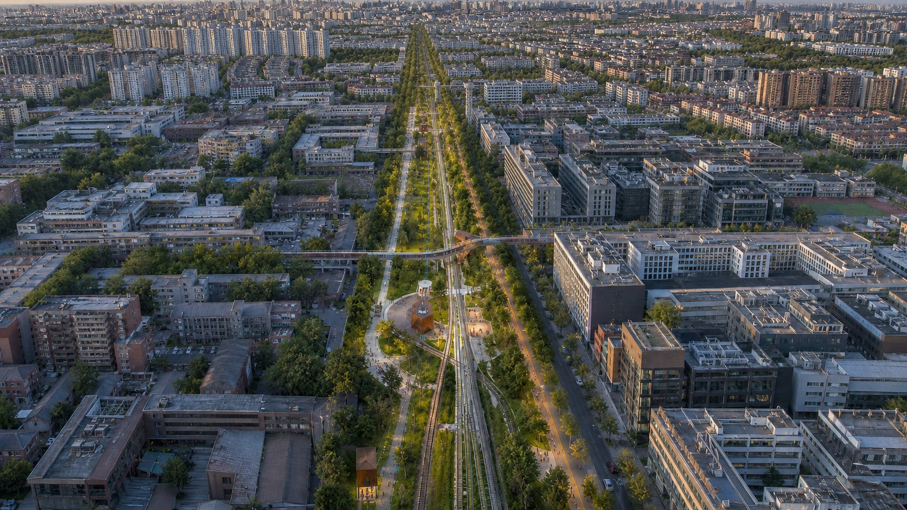
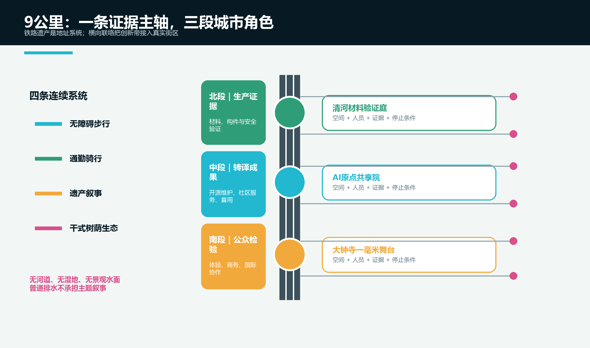
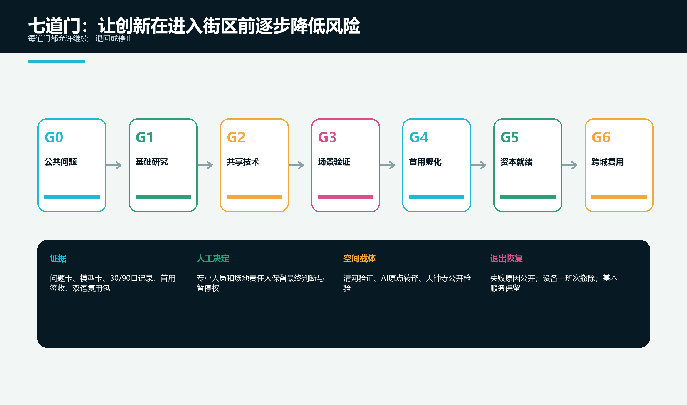
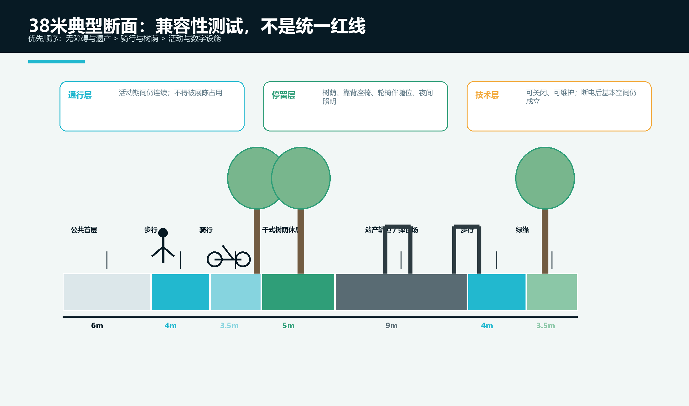
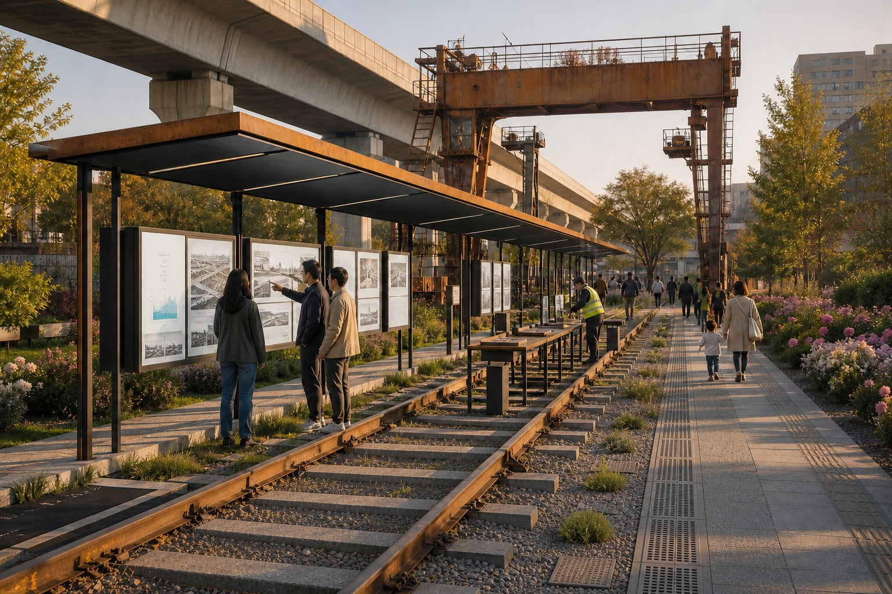
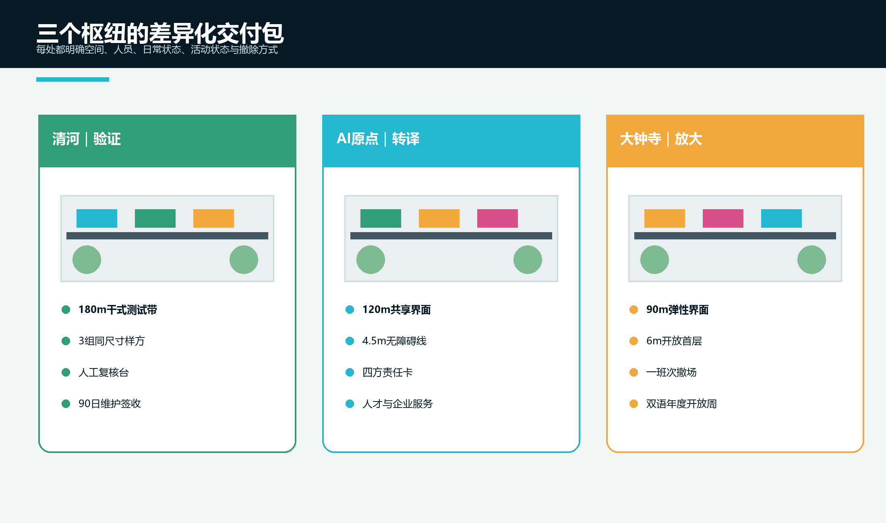

刻度：建立共同语言
项目编号、版本、证据和评价口径贯穿实验室与街区，成果换场地时，限制、维护成本和失败记录必须一同移动。
一条用公共证据校准AI创新的9公里铁路遗产带
最小变化 × 可见证据 × 人工责任 = 可持续的城市创新
01 / CONCEPT
铁路提供共同刻度，中关村提供可复现实验，AI治理提供人工责任。“一毫米”把三种文化变成同一套空间和运营规则。重点地块没有现状地表水系，因此设计聚焦铁路遗产、连续通行、树荫休息、开放首层和可逆试验，不虚构河湖与景观水面。
项目编号、版本、证据和评价口径贯穿实验室与街区，成果换场地时，限制、维护成本和失败记录必须一同移动。
无障碍、非数字服务、知情退出、专业人员最终决定权和遗产安全先于自动化；AI只是可关闭的服务层。
30天补齐责任和资料，90天验证使用与维护，365天公开复盘；每轮只改变足以检验一个关键判断的内容。
现状无连续地表水；新空间用乔木、耐旱植物、透气铺装、可拆座椅和普通排水构造形成，不建设水院、湿地或水景。

02 / ECOSYSTEM
创新链不是招商清单，而是七道逐步降低风险的门：公共问题、基础研究、共享技术、场景验证、首用孵化、资本就绪、跨城复用。
众智园验证，AI原点转译，大钟寺放大；中关村科技服务翼提供合规与资本就绪，小月河场景翼持续提出公共问题。
先完成30/90天真实场景测试、首用签收和维护成本，再整理知识产权、合规、市场与财务资料。
任何一道门都允许回退或退出，并公开原因；失败记录是公共知识，不被发布会叙事掩盖。

03 / FUTURE LIFE
医疗、教育和商业不是三个技术展台，而是三条具体用户旅程；每条旅程都包含实体空间、人工闸门、90天证据和停止条件。
原点社区设置无障碍路径、安静等候、隐私告知、纸质路线和人工咨询。AI不读病历、不做诊断。
清河材料样方、铁路构造、遮阴性能、无障碍和日常维护成为课程；AI分层解释，教师和策展人审核核心内容。
大钟寺提供可退出产品体验，中关村服务翼由法律、会计和知识产权人员完成专业签字。

04 / PUBLIC SPACE
38米典型断面不是统一红线，而是检查无障碍、骑行、遗产、干式树荫、活动和首层服务能否共存的工具。主轴之外再用横向联络接入地铁、社区、学校、科研院所和既有商业街。
先保连续无障碍和遗产安全，再组织骑行、乔木与休息；活动和数字设施最后进入，且不得封闭基本通行。
清河用180米干式测试带生产证据；原点用120米共享界面转译成果；大钟寺用90米弹性界面接受公众检验。
刻度门、问题牌、材料样方、可拆遮阴座椅、维护者桌、开源展架、复核台和可关闭电源舱均有安装、维护与撤除规则。

05 / CULTURE
铁路文化提供测量、连接和维护；中关村文化提供试验、转译和协作；AI新文化要求开源、解释和人工负责。
从百年刻度门到大钟寺舞台，依次完成测量、连接、试验、开源、复核、回到生活，而不是堆叠历史展板。
每个成果展示许可、适用条件、维护者、已知缺陷、复用记录和停止状态，不只播放宣传视频。
只承认澄清问题、合并版本、独立验证和长期维护；记录可申诉、可更正、可撤回。

06 / OPERATIONS
Q1澄清问题，Q2完成Beta测试，Q3发布开源组件，Q4公开复盘；月度维护和季度公众审议保证空间全年工作。
先确认责任、资料和一个无个人数据场景，再完成封闭样区、三次用户测试、无障碍审查与安全演练。
只建设一处枢纽组合样板，记录90天维护、投诉、人工接管和成本；未通过就不扩展。
指导、专业审查、场所运营、开源维护和公众小组分工；每个项目一个最终负责人，并设置独立暂停权。
A对公共结果最终负责，D完成交付，M维护系统，S拥有独立暂停权；任一席位空缺，项目不得占用公共空间。

总览地图 · 三层范围 · 重点区域 · 用地分区 · 交通慢行 · 蓝绿公共空间（场地校正为无水、干式绿地） · 建筑 · 更新项目 · AI 场景 · 核心指标 · 任务覆盖 · 自检状态 · 来源 · 假设
“蓝绿公共空间”是任务书中的专业审查项名称，不表示本方案虚构水体；本轮按无现状水系条件落实为现状树保护、树荫、耐旱种植、可维护铺装和普通排水边界。全文、图纸、GeoJSON、指标、来源、假设、任务覆盖和自检记录互相校核。下列比例来自临时几何，只用于概念一致性检查，不是法定指标。